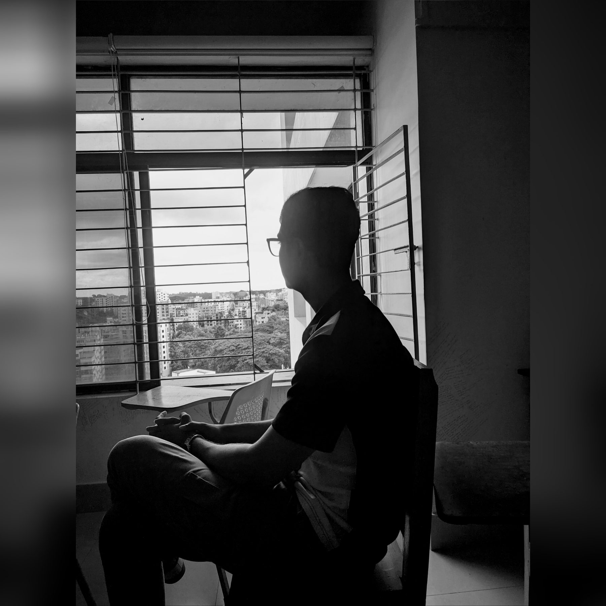

Web & app developer reading English Literature by day — I write interfaces the way I'd write a sentence: carefully, and only with the words that earn their place.
Most portfolios sell finished things. Mine is closer to a notebook left open — a class routine site that grew a payment system, an Android app that grew out of a website, a shop that's still being fitted for its shelves. I like the version of a project that's still being revised, the way a good paragraph is.
A class schedule & notes site for my USTC cohort — routine tables, a CGPA calculator, a lecturer directory, and a paid literature-book unlock system running on a Google Sheets backend.
A native Compose port of the Notes Hub — Home, Routine, Lecturers, CGPA and Cover screens in one app, built to detect and pull updates straight from the website.
A landing page and storefront for an independent clothing brand, built to take orders two ways: cash on delivery, or mobile banking — no friction either way.
A browser-based journal built for study tours — a photo grid with captions that exports cleanly to PDF, so a day in the field becomes a page worth keeping.
Every project here started smaller than it is now — a single page, one screen. The features got added because someone asked, not because a plan demanded them.
I'd rather make one targeted change than rewrite a working page. Most of what looks like polish here is a series of small, specific corrections.
Studying literature made me suspicious of extra words — on the page and in the codebase. If a line, or a feature, isn't earning its place, it goes.